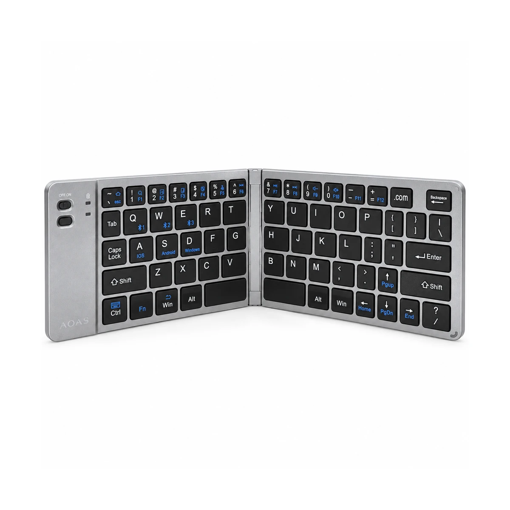
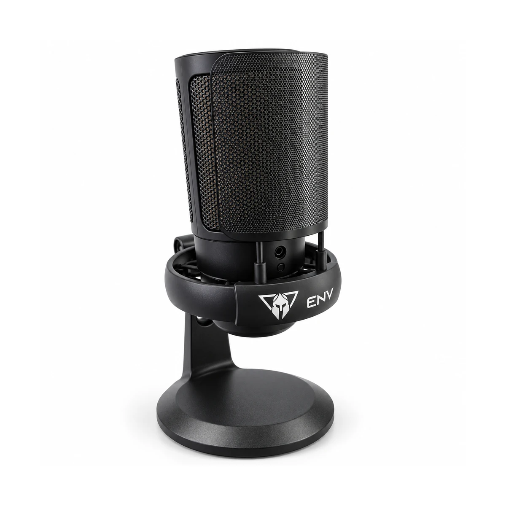

TECL030
Teclado Bluetooth plegable AOAS A-1006
Escribe con comodidad y guarda tu teclado en menos espacio. El AOAS A-1006 combina conexión Bluetooth, diseño plegable y carga USB-C para acompañar tu equipo compatible. Su bisagra central facilita transportarlo; las teclas incorporan accesos para iOS, Android y Windows. Distribución QWERTY sin tecla Ñ.
PROMO CONTADO $29.35 PVP $33.75Abrir ficha
Fotografía propia retocada · producto sin caja · datos comerciales conservados
MICR32
Micrófono USB ENV GamePod con filtro antipop
Prepara tu espacio para transmitir, conversar y crear contenido con el ENV GamePod. Su conexión USB, filtro antipop y base de escritorio reúnen lo esencial en un conjunto práctico. El diseño incorpora iluminación RGB y control de volumen indicados en el empaque; la portada muestra la unidad apagada.
PROMO CONTADO $28.60 PVP $32.89Abrir ficha
Fotografía propia retocada · producto sin caja · datos comerciales conservados